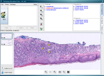
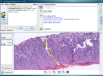

|
SlideTutor is a new kind of medical educational system that
provides a virtual apprenticeship
Studies in our laboratory have shown that SlideTutor is highly effective. On average, students are able to improve their diagnostic and reporting performance by a factor of four after as little as 4 hours of use of the system. [1][2] There are currently 300 tutor cases in two areas of dermatopathology: melanocytic lesions and inflammatory skin diseases. We will be adding over 1000 cases in a variety of other domains over the next 5 years, as part of a grant from the National Cancer Institute. |
 Make Diagnosis  Type Report |
|
[1] Crowley RS, Legowski E, Medvedeva, OM,
Tseytlin
E, Roh E and Jukic D.
Evaluation of an Intelligent Tutoring System in Pathology: Effects of
External Representation on Performance Gains, Metacognition, and
Acceptance. JAMIA 14(2): 182-190; 2007 |
|